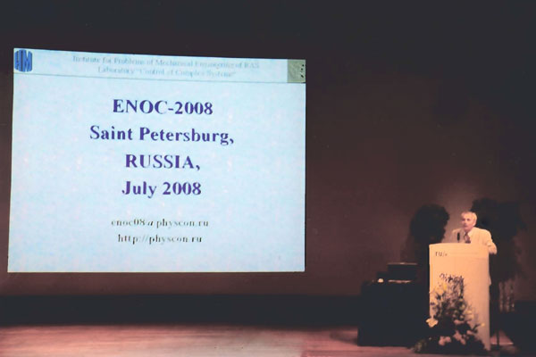
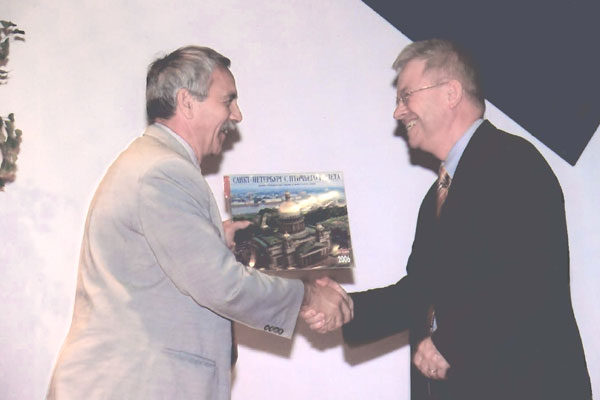

Proposals on organizing minisymposia and invited sessions are welcome
Please send your suggestions to enoc08@physcon.ru
Although still the brand name ENOC (EUROMECH Nonlinear Oscillations Conference) is used as the historical abbreviation, the ENOC Conferences aim at covering the complete field of Nonlinear Dynamics, including Multibody Dynamics and couplings to related fields like Control and (Structural) Optimization.
During the past decades, the area of Nonlinear Dynamics has been evolved in a revolutionary way, in particular in conjunction to applications in nonlinear engineering systems. The application of Nonlinear Dynamics to a wide variety of engineering systems has been possible due to the use of sophisticated computational techniques employing powerful concepts of Nonlinear Dynamics. These concepts have been and are being developed in Control, Mathematics, Mechanics and Physics. Careful experimental studies are vitally needed to observe and establish the real dynamical phenomena.
The ENOC 2008 Conference is aimed at bringing together a wide variety of specialists in the above fields with the purpose to show the latest developments in the respective fields, to exchange experience and to stimulate further interaction.
The topics for the Conference ENOC 2008 include but are not limited to:
|  |
| Presentation of ENOC'08 by A. Fradkov at the closing ceremony of ENOC'05 in Eindhoven, The Netherlands. |
|  |
| Alexander Fradkov (left) and ENOC'05 Chair Dick van Campen at the closing ceremony of ENOC'05 in Eindhoven, The Netherlands. |
BODYTEXT; include_once("bodyend.php"); ?>